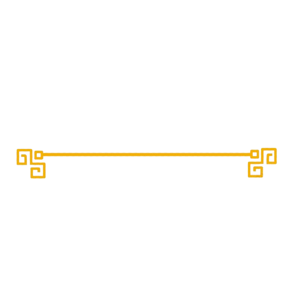
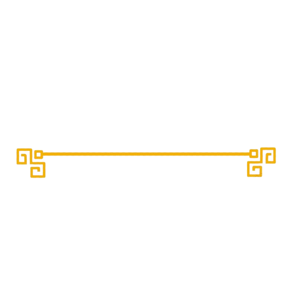

Kyokushin är en stil inom fullkontaktskarate som grundades av den japanske mästaren Masutatsu Oyama 1964. Stilens
namn, Kyokushin, betyder "den yttersta sanningens väg" och betonar fysiskt och mentalt utmanande träning. Mas
Oyama, som från början tränade traditionell karate, var inspirerad av att skapa en mer realistisk och hårdare form
av karate som satte stor vikt vid fysisk styrka, disciplin och uthållighet.
Oyama utvecklade Kyokushin-karate genom att kombinera tekniker från olika kampsporter och traditionell karate, och
fokuserade på hård träning och fullkontaktstävlingar för att testa både fysiska och mentala gränser. Han blev känd
för sina imponerande demonstrationer, som till exempel att slå ihjäl tjurar med bara sina händer för att visa
styrkan hos Kyokushin-karate.
Kyokushin spred sig snabbt över världen och har i dag ett stort antal dojoer och utövare på flera kontinenter.
Stilen är känd för sina tuffa träningstekniker, som bland annat inkluderar långa sparringpass, fysiska straff, och
att träna för att utveckla en inre styrka. En viktig del av Kyokushin är också dess tävlingssystem, där
fullkontakt används för att testa tekniker och tåla smärta.
Sedan Oyamas död 1994 har Kyokushin förgrenats i flera olika organisationer, men stilen och dess filosofi om hård
träning och mental uthållighet har bevarats. Kyokushin har haft stort inflytande på andra kampsporter och har
fostrat många framstående karateka och kampsportare.
Filosofi
Kyokushins filosofi bygger på en rad centrala värden som tillsammans främjar både fysisk och mental utveckling.
Respekt och ödmjukhet är grundläggande, där utövaren lär sig att visa respekt för sina tränare, medutövare och
traditionerna inom kampsporten. Detta går hand i hand med vikten av att utveckla mental styrka och uthållighet.
Genom hård träning lär sig karateka att övervinna både fysiska och psykiska hinder, och att stå emot svårigheter –
både under träning och i livet i stort.
En annan central del är strävan efter självförbättring, där man inte bara söker utveckling i sin kampsport utan
även i sitt dagliga liv. Kyokushin uppmuntrar utövare att ständigt utmana sig själva, både i tekniska färdigheter
och i sin inre disciplin. Fullkontaktsträningen och sparringen, som är en del av Kyokushin, syftar till att
utveckla mod och beslutsamhet. Genom att stå emot smärta och hantera verkliga stridssituationer lär sig utövaren
att alltid kämpa vidare, oavsett vilka utmaningar som möter en.
 
